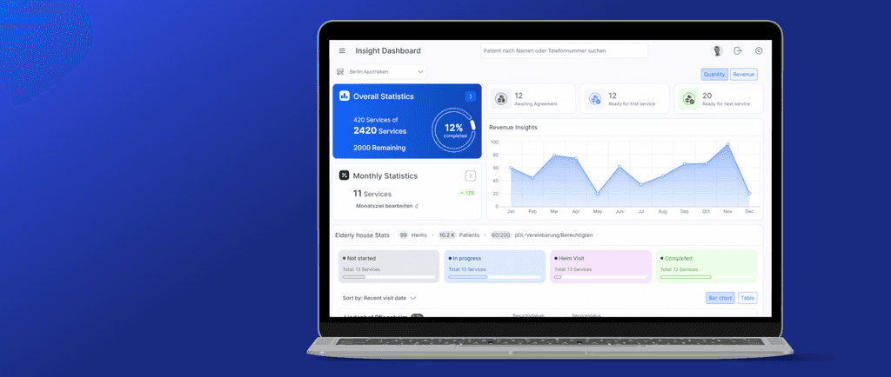

Thinking in systems, fascinated by design.
I create trust and reliability by design: usable, accessible, and easy to work with.
Selected case studies
Five entries
apodienste
Pharmaceutical digital services
Case studies from apodienste
- Improving usability of pharmacy service delivery through a modular patient drawer I redesigned it as a set of modules (appointments, documents and comments) held together by a guided service flow. Read the case study
- Increasing tracking and auditability in patient case handling Over three releases, we turned the comment thread into actions the system could track. Read the case study

ARKK platform
Enterprise data platform
University projects
- Turning ambient data into emotional predictability A sensory data platform that helps people with social anxiety feel emotionally prepared before entering public spaces — transforming real-time ambient data into calming visual previews. Read
- Redesigning a historical archive for the digital age A full UX redesign of the Marx Memorial Library website — improving navigation, accessibility and content discovery for a historical archive serving researchers and the public. Read
How I work
Principles-
Complicated territory
I'm drawn to complicated territory — the difficulty is rarely visual. The rules are involved, the states are numerous, and the person on the other side of the screen is accountable for getting it right.
-
Good defaults
Good defaults do more work than polish.
-
Research over assumptions
I work cross-functionally and trust research over assumptions.
About the designer
Profile
I come at design from a technical view, but what holds my attention is design's impact — not how something looks, but what it does. Good design, to me, isn't visual: it's a service, something that quietly does its job for the person depending on it.
Known for a big smile and a steady supply of coffee and tea. I paint occasionally, and I'm always chasing new music.
Yasaman Aminian
Contact
Open to product design roles and freelance work.
Based in the United Kingdom.